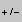
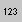
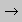

Editor is intended to be used without any special documentation or training, but there are some tricks which can help you to work with it more efficiently.
Menu Buttons
clean the drawing area
powerful chain tool, allows creation of various chains and rings, by clicking single bond changes it to double
delete functional group - choose this option and then click on
the bond connecting the group with the main skeleton.
undo last editing step.
button (if enabled in the param tag) allows easy specification of atomic queries for substructure searches.
the type of stereo bond (up, down) may be changed by clicking
the already created stereo bond; this cycles through two / four possible stereo bond types.
 change charge on atom. The editor enables modification of charges only in "reasonable" cases. If you are not satisfied with the editor's inteligence (concerning charges and the explicit number of hydrogens) you can force your will by using the X button (in this case close input in square brackets, as [BH2+]
"Non-organic" atoms or atoms with nonstandard valence may be entered with help of the X button by specifying atomic SMILES (without [] brackets, i.e. Si, Se).
Keyboard Shortcuts (can save you a lot of clicking)
Most of the commands may be accessed also by keyboard shortcuts. It
is possible to :
change atom type by pressing C N O S F L (for Cl) B (for Br) I P H X R and clicking the respective atom
choose bond order - for single bond, = for double bond
choose ring type by pressing 3 4 5 6 7 8 9 or 1 for phenyl, 0 for furyl
start delete mode by pressing D or Del and return to the standard state (carbon, single bond) with Esc
common functional groups may also be added by keyboard shortcuts, use t for t-butyl, ft for trifluoromethyl, lt for trichloromethyl, a for COOH, z for SO3H and y for nitro, and then click the atom where the group should be connected.
Moving and Rotation
You can move molecule by "dragging free space" with the left mouse button and rotate it by using the left mouse button and shift key (or left and right mouse buttons together).
Adding rings
When a ring template is selected and multivalent atom is clicked, a new ring will be created connected by single bond to this atom. When a spiro ring is required, the Shift key must be pressed when clicking the atom. Spiro ring may be added only to atom with 2 single bonds.
Multivalent nitrogen groups
Multivalent nitrogen groups, such as nitro, azide, N-oxide, nitrile etc, should be drawn with a pentavalent nitrogen as shown below.
The program automatically converts polar form of these groups into non-polar one with pentavalent nitrogen. If you prefer polar nitro (and similar) groups, use keyword "polarnitro" in the applet param tag.
Stereochemistry
Stereochemistry at C4 centers, double bonds and allenes is supported.
Use the up / down wedge bonds to indicate stereochemistry at the C4 centers. Remember, that only bonds with a "sharp point" towards the atom are considered. When creating SMILES the editor tries to guess missing stereo features, in unresolvable cases an error message is issued and the SMILES without stereo information is created.
When the autoez keyword is set, SMILES with E,Z stereochemistry on all non-ring double bonds is generated automatically.
Without this keyword (or for ring double bonds) you have to mark a double bond as stereo by clicking on it with the stereo bond button selected. The bond color will change to violet.
Stereochemistry may be completely disabled by the "nostereo" option in the param tag.
Input of Multipart Structures
By default only non-disconnected structures are allowed. This may be changed by a "multipart" option in the applet param tag. A button appears in the JME menu. Creation of a new molecule may be started only after clicking the button, selecting a proper template (atom, ring, bond) and clicking free space in the drawing area. Without this button the click the free space has the same effect as in the standard mode (i.e moving or rotation of the last touched molecule). In the multipart mode CLR button deletes the last touched molecule.
Atom Numbering
Atom numbering (marking) is enabled with the option "number" in the applet param tag (for reaction input this is default). Button  appears in the JME menu. To mark an atom press the 123 button and then the atom. You can mark more atoms with the same number when pressing SHIFT while clicking the 2nd and further atoms. Second click on the marked atom deletes the number.
Reaction Input
Reaction input is enabled with the option "reaction" in the applet param tag. Buttons , and appear in the JME menu and arrow appears also in the drawing area.
Now simply draw reactant(s), product(s) and modulator(s) (modulators have to be above the arrow) as explained in the description of input of multipart structures.
The arrow button enables simplified input of reactions. After clicking it, the reactant will be copied to the product (including atom numbering, if any). When the SHIFT is pressed during this action all atoms will be automatically numbered.
Query Features
Query button (when enabled in the option tag) launches a query window (click with the right mouse button) that allows creation of SMARTS atom queries by combining various atom attributes. Create a SMARTS query and then click the respective atom in the molecule.